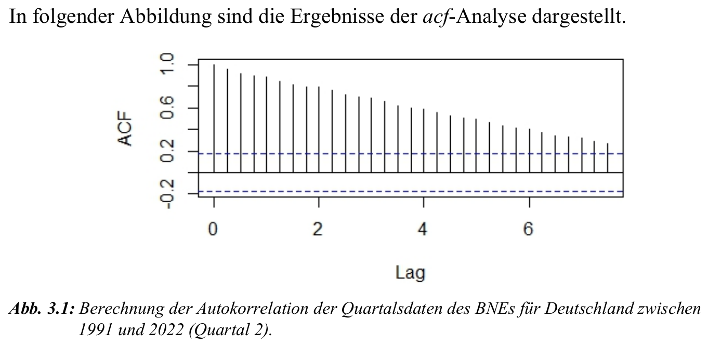

Pakete für Zeitreihenanalysen in R
Zeitreihenanalyse mit R — Paketübersicht
- Eine Vielzahl von Paketen.
- Zusammenfassung im Studienbrief GDA 03 auf den Seiten 14–18, Kapitel 3.1–3.2.
- Fokus auf die „Explorativen Analysen“.
- Grund: Wahrscheinlichkeit, dass das in der Klausur abgefragt wird, ist deutlich größer.
- Gleiches gilt für Kapitel 3.5: wichtig für Bachelorarbeit, in der Klausur jedoch schwer abzufragen.
- Trotzdem: bitte vor der Klausur einmal durchlesen, falls doch etwas dazu gefragt wird.
Explorative Analyse von Zeitreihen: Tests
KPSS-Test — Theorie
- KPSS-Test (Kwiatkowski–Phillips–Schmidt–Shin-Test):
- Prüft, ob eine Zeitreihe nicht-stationär ist.
- Nullhypothese \(\ra\) \(H_0\): Zeitreihe stationär.
- Alternativhypothese \(\ra\) \(H_1\): Zeitreihe nicht-stationär.
- Wichtig für Modellwahl in der Zeitreihenanalyse.
- Berechnung in R:
stationary.test(myTS, method = "kpss")- Interpretation bei festgelegtem Signifikanzniveau von 1 %:
- p-Wert > 0.01 \(\ra\) Nullhypothese beibehalten (stationär).
- p-Wert < 0.01 \(\ra\) Nullhypothese ablehnen (nicht-stationär).
KPSS-Test — Beispiel
PP- und ADF-Tests — Theorie
- Phillips–Perron-Test (PP-Test):
- Prüft auf Stationarität.
- Nullhypothese \(\ra\) \(H_0\): Zeitreihe ist nicht-stationär.
- Alternativhypothese \(\ra\) \(H_1\): Zeitreihe ist stationär.
- Robust gegenüber Autokorrelation und Heteroskedastizität.
- Augmented Dickey–Fuller-Test (ADF-Test):
- Prüft auf Stationarität, wie der PP-Test, berücksichtigt jedoch Autokorrelation.
- Nullhypothese \(\ra\) \(H_0\): Zeitreihe ist nicht-stationär.
- Alternativhypothese \(\ra\) \(H_1\): Zeitreihe ist stationär.
- Berechnung in R:
- PP-Test:
stationary.test(myTS, method = "pp") - ADF-Test:
stationary.test(myTS, method = "adf")
- PP-Test:
PP-Test — Beispiel
ADF-Test — Beispiel
stationary.test(bne_quartal_de, method = "adf")Testen von Autokorrelation — ACF
Definition:
- Autokorrelation beschreibt den Zusammenhang zwischen den Werten einer Zeitreihe und deren verzögerten Werten.
- Wichtig für Modellierung, da Abhängigkeiten über die Zeit hinweg berücksichtigt werden müssen.
Autokorrelationsfunktion (ACF):
Misst die Korrelation zwischen einem Wert und seinen verzögerten Werten (Lags).
Berechnung in R:
acf(myts, lag.max = 30)Interpretation:
- Große Werte \(\ra\) starke Autokorrelation.
- Signifikanzgrenze durch gestrichelte Linie gekennzeichnet.

Testen von Autokorrelation — PACF
Partielle Autokorrelationsfunktion (PACF):
- Misst den direkten Zusammenhang zwischen einem Wert und seinen verzögerten Werten, ohne Einfluss dazwischenliegender Werte.
- Berechnung in R:
pacf(myts, lag.max = 30) - Interpretation: Hohe Werte zeigen direkten Einfluss eines bestimmten Lags auf die Zeitreihe.
Box–Pierce- und Ljung–Box-Test:
Prüfen, ob die Autokorrelation der Zeitreihe insgesamt signifikant ist.
Berechnung in
R:Box.test(myTS, lag = 4, type = "Box-Pierce")Interpretation:
- p-Wert < 0.05 \(\ra\) Nullhypothese ablehnen \(\ra\) Autokorrelation vorhanden.
- Ljung–Box-Test für kleine Stichproben besser geeignet.
- ACHTUNG:Unterstrichen Im Skript steht noch „Stationarität“, es geht aber um Ablehnung der Signifikanz der Autokorrelation, siehe z. B. diesen Wikipedia-Link hier.

Saison- und Trendbereinigung
Saisonbereinigung — Ziel: Überprüfung, ob eine Zeitreihe saisonale Effekte enthält
Warum Saisonbereinigung?
- Saisonale Schwankungen können Analyse verfälschen.
- Bereinigte Zeitreihen ermöglichen genauere Modellierung.
Methoden zur Saisonbereinigung:
- MA-Verfahren:
Bestimmung der Saisonkomponente über gleitende Mittelwerte.
Entfernen der Saisonkomponente:
BNE_SB_MA <- myts - decompose(myts)$seasonal
- STL-Verfahren:
Berechnung der Saisonkomponente durch Loess-Glättung.
Nur für additive Modelle geeignet.
Entfernen der Saisonkomponente:
BNE_SB_loess <- seasadj(stl(myts, s.window = "periodic"))
- MA-Verfahren:
Vergleich mit offiziellen saisonbereinigten Daten:
- Statistisches Bundesamt nutzt den BV4.1-Filter.
- Unterschiedliche Methoden können zu leicht abweichenden Ergebnissen führen.
Trendbereinigung — Entfernung des Trends, um die Zeitreihe stationär zu machen
- Wann? Falls keine Stationarität vorliegt, bereinigen wir den Trend.
- Methode — Differenzenbildung:
Berechnung der Differenz zwischen aufeinanderfolgenden Werten.
Anzahl der Differenzen in R bestimmen:
nsdiffs(myts)Differenzenbildung zur Trendbereinigung:
bne_Q_trend_seasdiff <- diff(myts, lag = frequency(myts), differences = 1)
- Ergebnis:
- Nach Differenzenbildung ist der Trend entfernt.
- Zeitreihe kann nun für weitere Analysen verwendet werden.
Filtermethoden für Trend- und Saisonbereinigung
- Zusätzliche Methoden zur Glättung der Zeitreihe.
- Hodrick–Prescott-Filter (HP-Filter):
Trennt den zyklischen Anteil von der Zeitreihe.
Berechnung in R:
myts_filter <- mFilter(myts, filter = "HP")
- Baxter–King-Filter (BK-Filter):
Entfernt sehr kurzfristige Schwankungen.
Berechnung in R:
myts_filter <- mFilter(myts, filter = "BK")
- Ergebnis:
- Glättung der Zeitreihe für bessere Modellierung und Vorhersage.